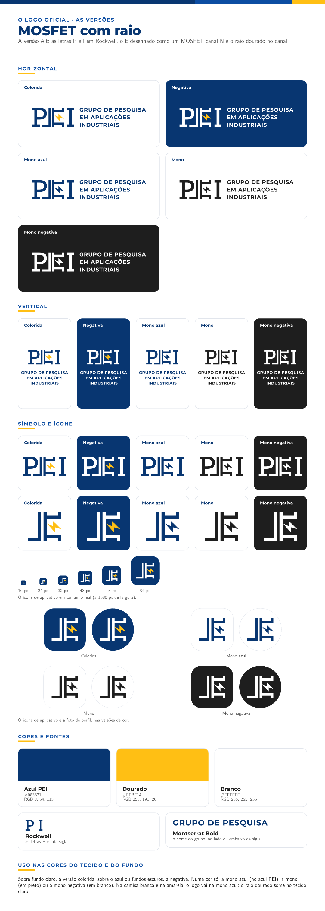

LOGO DO PEI
O logo oficial para baixar
O MOSFET com raio: a sigla PEI com o E desenhado como um transistor MOSFET e o raio dourado no canal. Baixe o kit com todas as versões e o manual de identidade.
MANUAL E ARQUIVOS
Baixe o logo
O kit tem o logo em cinco versões de cor (colorida, negativa, mono azul, mono e mono negativa), nas quatro formas (horizontal, vertical, símbolo e ícone), em SVG, PDF e PNG, e o manual de identidade.
Kit completo (zip)
Tudo: SVG, PDF, PNG, ícones e o manual. 2,9 MB.
Manual de identidade (PDF)
Conceito, versões, cores, tipografia, área de proteção, usos incorretos e aplicações.
Só os SVG (zip)
Vetor, de qualquer tamanho: site, Inkscape, Illustrator, Canva.
Só os PNG (zip)
150, 300 e 600 ppi, com fundo transparente ou branco, e os ícones.
Só os PDF (zip)
Vetor, para a gráfica e para o LaTeX ou o Typst.
Todos os arquivos, um a um
O logo
| Forma | Cor | Vetor | PNG |
|---|
Ícones, aplicativo e perfil
VERSÕES
As versões, as cores e as fontes
Horizontal, vertical, símbolo e ícone, nas cinco versões de cor.
